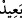

boylamıştı.[160] Allah Teâlâ şöyle buyurur: “Şüphesiz ki münâfıklar, cehennemin en
alt tabakasındadırlar.” (en-Nisa, 4/145) İşte orada bulunanların Allah Teâlâ’nın
kendilerine işittirdiği bu gürültüyü duymaları, ibret almaları içindir.
Bir haberde Rasûlullah (s.a.)’in şöyle buyurduğu rivâyet edilmiştir: “Mirac gecesi
üçüncü semâda duran bir taş gördüm. Cebrail’e bunun mâhiyetini sordum. “Bundan
sorma.” dedi. Dönüşümde o taşın üzerinde durarak: “Taş hakkında bana bilgi ver.”
deyince, Cebrail: “Bu, Lût kavmine yağdırılan taşlardan ayrılarak ümmetinin
zâlimlerine saklanmıştır.” dedi. Sonra da “Onlar zâlimlerden uzak değildir.” âyetini
okudu.” Zehratü’r-riyâz’da böyle geçmektedir.
Âlim olan zâlimden âr eder, öğüt vermezse
Onun üzerine gökten taş yağmasına şaşılmaz
et-Tibyân’da şöyle denilir: “ __WORD__/ uzak” demek olmayacak, meydana gelmesi
düşünülemeyen demektir. Olacak her şey ise yakındır.
Muhammed b. Mervan’ın şöyle anlattığı rivayet edilir: “Son geçişimizde Nube
adasında bulundum. Çadır kurulmasını emrettim. Çadır kurulurken bu kabileye mensup
adamlar hayret ederek ortaya çıktılar. Başına bir elbise bağlamış kel ve uzun boylu bir
adam olan hükümdarları bizi karşılayıp selâm verdi ve yere oturdu. Hükümdara:
“–Neden yaygının üstüne otur muyorsun?” deyince şöyle dedi:
“–Ben hükümdarım, ama Allah’ın yücelttiği kimselerin O’na karşı mütevazi olması
gerekir.”
Büyüklerin tevâzu göstermesi güzeldir
Eğer fakir tevâzu gösterirse bu onun ahlâkıdır
Hükümdar daha sonra:
“–Peki kitabınızda fesâd yasaklandığı halde siz neden ekinimizi hayvanlarınıza
çiğnetiyorsunuz?” diye sordu. Ben:
“–Cahillikleri yüzünden kölelerimiz yapmıştır.” dedim.
“–Peki dininizde yasak olduğu halde niçin şarap içiyorsunuz?” deyince
“–Taraftarlarımız câhillikleri sebebiyle yapıyorlar işte” diye cevapladım.
“–Peki Peygamberiniz’in lisanıyla yasaklandığı halde niçin ipek giyiyor, altın ve
gümüşle süsleniyorsunuz?” dedi.
“–Hizmetçilerimizin yabancı ırktan olanları böyle yapıyor, biz de onlara karşı çıkmayı
kerih görüyoruz.” dedim.
Bunun üzerine yüzüme bakarak öne sürdüğüm tüm mazeretleri alay edercesine
tekrarladı ve şöyle dedi: